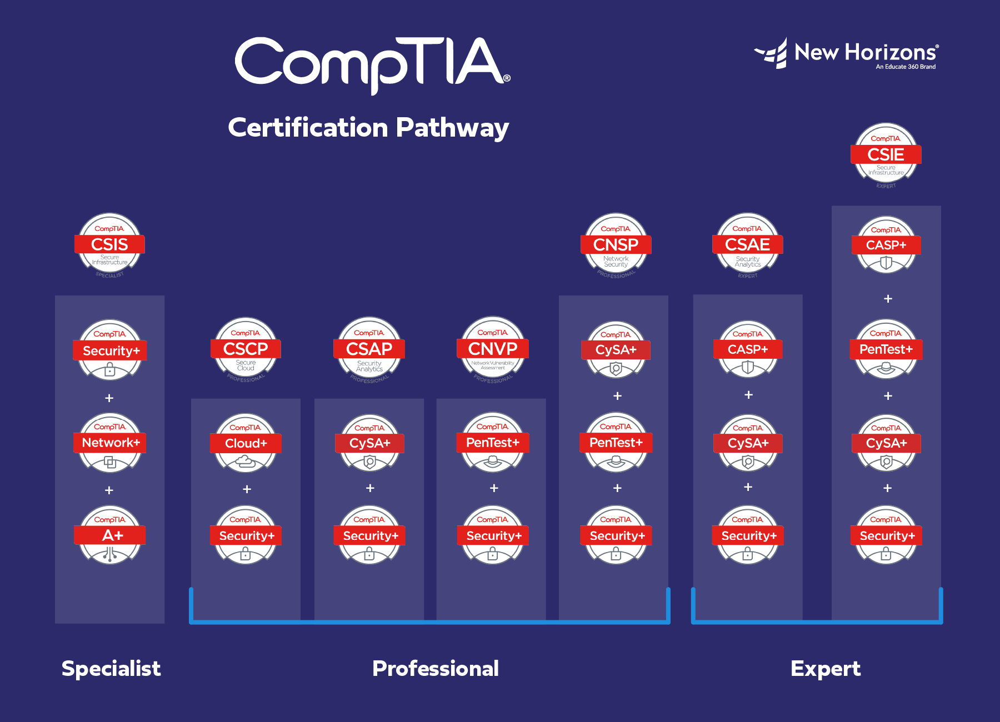

How Vital Are CompTIA Certifications for Those Getting into Cybersecurity?
by Gabriel Banish
As I desired to move out of a software-engineering path, I scoured around for areas of study that better aligned with my interests. Eventually, I combined my past study in criminology with my desire to make meaningful impacts to a community to look into cybersecurity. It allowed me to still work in a technical field, but work towards something that more directly benefited a community through protection. It allowed for more meaningful relationships as I work my way up and become a reliable safeguard to those who need me. Thus, in my search in how to break into cyber, I came across the common recommendation to start with a few CompTIA certifications. They are all primarily tech focused but allow for different paths that the user can follow, one being Security+. Many referenced these as the “gold-standard” for breaking into roles like IT help desk, SOC analysts, and system administrators. With zero technical professional experience, I figured that these would be my best path forward into my first technical internship. I began my studies for the A+ certification, which encapsulates most of what any entry-level IT worker would need (Networking, Azure/365 Admin, etc.). It was intimidating, but I took my time. About halfway through my studies, I was lucky enough to land a position as a Specialist with Apple, thanks to a reference from my roommate. As I fell in love with this role, my studies slowly subsided. And even then, my time there and topics I did study allowed me to then move into my first IT internship. Finally, I worked my way into a Cybersecurity Consultant Internship with Deloitte (and a full time offer after graduation). This was all without a single certification, despite the masses saying you’d need at least a trifecta to make it this far. This has formed my belief that the “badges” aren’t as important as how you present yourself, and who you really are. Show others your professionalism and willingness to learn, and that’ll take you farther than most pieces of paper.
Image reference: New Horizons